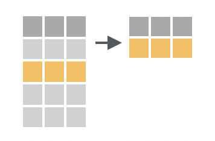

10:00
Daten transformieren mit {dplyr}
Unit 2
Ziele für heute
- ein Projekt in RStudio beschreiben
-
Regeln der
{dplyr}-Befehle auflisten - Befehle zur Transformation von Zeilen identifizieren und anwenden
Workflow: R-Projects
Working Directory
setwd() ↔︎️ getwd()
RStudio Projekte üéÜ
RStudio-Projekte
Einer der stärksten Aspekte von RStudio:
Relative Pfade (
setwd()nicht erforderlich)Dateien und Ordner zusammen, die zusammengehören

Praktikum: RStudio-Projekte
- Erstellt ein neues Quarto-Projekt namens
test
- Erstellt ein RStudio-Project mit einem existierenden Ordner
20:00 Break ☕ üçµ üçú

Daten-Transformation mit {dplyr}

Zeilen: filtern, anordnen
Spalten: auswählen, anordnen, umbenennen, erstellen
Gruppen: zusammenfassen, zählen
Tabellen: zusammenfügen
Regeln der {dplyr}-Functions
BEFEHL(DATEN_ZUM_UMWANDELN, WAS_MACHT_ES)
das erste Argument ist immer ein data frame
die nachfolgenden Argumente geben an was mit dem data frame gemacht werden soll
Geben immer ein data frame zurück
ändern nichts an Ort und Stelle
Zeilen transformieren
filter(), arrange(), distinct(), slice()
Daten
Daten
Rows: 31,734
Columns: 21
$ date <date> 2017-05-21, 2017-05-21, 2017-05-21, 2017-05-21…
$ entity_id <dbl> 2765, 2766, 2766, 2766, 2766, 2766, 2767, 2767,…
$ name <chr> "Binningen", "Birsfelden", "Birsfelden", "Birsf…
$ district <chr> "Arlesheim", "Arlesheim", "Arlesheim", "Arleshe…
$ vote_id <chr> "20170521_K5", "20170521_E1", "20170521_K2", "2…
$ domain <chr> "canton", "federation", "canton", "canton", "ca…
$ type <chr> "proposal", "proposal", "proposal", "proposal",…
$ title_de_CH <chr> "Änderung der Verfassung des Kantons Basel-Land…
$ counted <lgl> TRUE, TRUE, TRUE, TRUE, TRUE, TRUE, TRUE, TRUE,…
$ answer <chr> "accepted", "accepted", "rejected", "rejected",…
$ percent_yeas <dbl> 87.93388, 60.14460, 29.46679, 26.06433, 35.0667…
$ percent_nays <dbl> 12.06612, 39.85540, 70.53321, 73.93567, 64.9332…
$ percent_turnout <dbl> 46.24283, 34.89440, 34.20569, 33.97612, 33.8689…
$ eligible_voters <dbl> 9941, 6534, 6534, 6534, 6534, 6534, 4192, 4192,…
$ expats <dbl> NA, NA, NA, NA, NA, NA, NA, NA, NA, NA, NA, NA,…
$ empty <dbl> 321, 22, 54, 62, 71, 127, 16, 24, 46, 57, 123, …
$ invalid <dbl> 41, 45, 43, 44, 46, 48, 0, 0, 0, 0, 1, 26, 24, …
$ yeas <dbl> 3724, 1331, 630, 551, 735, 1710, 1056, 939, 484…
$ nays <dbl> 511, 882, 1508, 1563, 1361, 292, 1131, 1264, 16…
$ link_to_canton_results <chr> "https://data.bl.ch/explore/dataset/10500/table…
$ url_web <chr> "https://abstimmungen.bl.ch/vote/anderung-der-v…Zeilen filtern
filter(Datensatz, Zeilenbedingung)
Zeilen filtern
Zeilen filtern
Zeilen filtern
Zeilen filtern
# A tibble: 369 × 21
date entity_id name district vote_id domain type title_de_CH counted
<date> <dbl> <chr> <chr> <chr> <chr> <chr> <chr> <lgl>
1 2017-05-21 2771 Oberw… Arleshe… 201705… feder… prop… Energieges… TRUE
2 2017-05-21 2771 Oberw… Arleshe… 201705… canton prop… Formuliert… TRUE
3 2017-05-21 2771 Oberw… Arleshe… 201705… canton prop… Nicht form… TRUE
4 2017-05-21 2771 Oberw… Arleshe… 201705… canton prop… Änderung d… TRUE
5 2017-05-21 2771 Oberw… Arleshe… 201705… canton prop… Änderung d… TRUE
6 2017-02-12 2771 Oberw… Arleshe… 201702… feder… prop… Bundesbesc… TRUE
7 2017-02-12 2771 Oberw… Arleshe… 201702… feder… prop… Bundesbesc… TRUE
8 2017-02-12 2771 Oberw… Arleshe… 201702… feder… prop… Bundesgese… TRUE
9 2016-11-27 2771 Oberw… Arleshe… 201611… feder… prop… Volksiniti… TRUE
10 2016-11-27 2771 Oberw… Arleshe… 201611… canton coun… Gegenvorsc… TRUE
# ℹ 359 more rows
# ℹ 12 more variables: answer <chr>, percent_yeas <dbl>, percent_nays <dbl>,
# percent_turnout <dbl>, eligible_voters <dbl>, expats <dbl>, empty <dbl>,
# invalid <dbl>, yeas <dbl>, nays <dbl>, link_to_canton_results <chr>,
# url_web <chr>{dplyr}-Befehl:filter()- Erstes Argument: data frame
- Zweites Argument: Zeilenbedingung
- Resultat: data frame
Zeilen filtern
Zeilen filtern
# A tibble: 12 × 21
date entity_id name district vote_id domain type title_de_CH counted
<date> <dbl> <chr> <chr> <chr> <chr> <chr> <chr> <lgl>
1 2016-02-28 2771 Oberw… Arleshe… 201602… feder… prop… die Volksi… TRUE
2 2016-02-28 2771 Oberw… Arleshe… 201602… feder… prop… die Volksi… TRUE
3 2016-02-28 2771 Oberw… Arleshe… 201602… feder… prop… die Volksi… TRUE
4 2016-02-28 2771 Oberw… Arleshe… 201602… feder… prop… die Änderu… TRUE
5 2021-11-28 2771 Oberw… Arleshe… 202111… feder… prop… Volksiniti… TRUE
6 2021-11-28 2771 Oberw… Arleshe… 202111… feder… prop… Volksiniti… TRUE
7 2021-11-28 2771 Oberw… Arleshe… 202111… feder… prop… Änderung v… TRUE
8 2020-09-27 2771 Oberw… Arleshe… 202009… feder… prop… Volksiniti… TRUE
9 2020-09-27 2771 Oberw… Arleshe… 202009… feder… prop… Änderung v… TRUE
10 2020-09-27 2771 Oberw… Arleshe… 202009… feder… prop… Bundesbesc… TRUE
11 2005-06-05 2771 Oberw… Arleshe… 200506… feder… prop… Bundesbesc… TRUE
12 2005-06-05 2771 Oberw… Arleshe… 200506… feder… prop… Bundesgese… TRUE
# ℹ 12 more variables: answer <chr>, percent_yeas <dbl>, percent_nays <dbl>,
# percent_turnout <dbl>, eligible_voters <dbl>, expats <dbl>, empty <dbl>,
# invalid <dbl>, yeas <dbl>, nays <dbl>, link_to_canton_results <chr>,
# url_web <chr>Logische Operatoren
<
<=
>
>=
==
!=
x & y
kleiner
kleiner gleich
grösser
grösser gleich
genau gleich
ungleich
x UND y
x | y
is.na(x)
!is.na(x)
x %in% y
!(x %in% y)
!x
x Oder y
x ist NA
x ist nicht NA
x ist in y
x ist nicht in y
nicht x
Reihenfolge der Zeilen ändern

arrange(Datensatz, Spalte)
Reihenfolge der Zeilen ändern
# A tibble: 31,734 × 21
date entity_id name district vote_id domain type title_de_CH counted
<date> <dbl> <chr> <chr> <chr> <chr> <chr> <chr> <lgl>
1 2003-02-09 2761 Aesch… Arleshe… 200302… feder… prop… Volksrechte TRUE
2 2003-02-09 2761 Aesch… Arleshe… 200302… feder… prop… Kantonale … TRUE
3 2003-02-09 2762 Allsc… Arleshe… 200302… feder… prop… Volksrechte TRUE
4 2003-02-09 2762 Allsc… Arleshe… 200302… feder… prop… Kantonale … TRUE
5 2003-02-09 2763 Arles… Arleshe… 200302… feder… prop… Volksrechte TRUE
6 2003-02-09 2763 Arles… Arleshe… 200302… feder… prop… Kantonale … TRUE
7 2003-02-09 2764 Biel-… Arleshe… 200302… feder… prop… Volksrechte TRUE
8 2003-02-09 2764 Biel-… Arleshe… 200302… feder… prop… Kantonale … TRUE
9 2003-02-09 2765 Binni… Arleshe… 200302… feder… prop… Volksrechte TRUE
10 2003-02-09 2765 Binni… Arleshe… 200302… feder… prop… Kantonale … TRUE
# ℹ 31,724 more rows
# ℹ 12 more variables: answer <chr>, percent_yeas <dbl>, percent_nays <dbl>,
# percent_turnout <dbl>, eligible_voters <dbl>, expats <dbl>, empty <dbl>,
# invalid <dbl>, yeas <dbl>, nays <dbl>, link_to_canton_results <chr>,
# url_web <chr>Reihenfolge der Zeilen ändern
# A tibble: 31,734 × 21
date entity_id name district vote_id domain type title_de_CH counted
<date> <dbl> <chr> <chr> <chr> <chr> <chr> <chr> <lgl>
1 2024-11-24 2761 Aesch… Arleshe… 202411… feder… prop… Bundesbesc… TRUE
2 2024-11-24 2761 Aesch… Arleshe… 202411… feder… prop… Änderung v… TRUE
3 2024-11-24 2761 Aesch… Arleshe… 202411… feder… prop… Änderung v… TRUE
4 2024-11-24 2761 Aesch… Arleshe… 202411… feder… prop… Änderung v… TRUE
5 2024-11-24 2762 Allsc… Arleshe… 202411… feder… prop… Bundesbesc… TRUE
6 2024-11-24 2762 Allsc… Arleshe… 202411… feder… prop… Änderung v… TRUE
7 2024-11-24 2762 Allsc… Arleshe… 202411… feder… prop… Änderung v… TRUE
8 2024-11-24 2762 Allsc… Arleshe… 202411… feder… prop… Änderung v… TRUE
9 2024-11-24 2763 Arles… Arleshe… 202411… feder… prop… Bundesbesc… TRUE
10 2024-11-24 2763 Arles… Arleshe… 202411… feder… prop… Änderung v… TRUE
# ℹ 31,724 more rows
# ℹ 12 more variables: answer <chr>, percent_yeas <dbl>, percent_nays <dbl>,
# percent_turnout <dbl>, eligible_voters <dbl>, expats <dbl>, empty <dbl>,
# invalid <dbl>, yeas <dbl>, nays <dbl>, link_to_canton_results <chr>,
# url_web <chr>Eindeutige Zeilen finden
Zeilen nach Indices auswählen
slice()-Familie
# A tibble: 3 × 21
date entity_id name district vote_id domain type title_de_CH counted
<date> <dbl> <chr> <chr> <chr> <chr> <chr> <chr> <lgl>
1 2017-05-21 2769 Münche… Arleshe… 201705… canton prop… Änderung d… TRUE
2 2017-05-21 2770 Muttenz Arleshe… 201705… feder… prop… Energieges… TRUE
3 2017-05-21 2770 Muttenz Arleshe… 201705… canton prop… Formuliert… TRUE
# ℹ 12 more variables: answer <chr>, percent_yeas <dbl>, percent_nays <dbl>,
# percent_turnout <dbl>, eligible_voters <dbl>, expats <dbl>, empty <dbl>,
# invalid <dbl>, yeas <dbl>, nays <dbl>, link_to_canton_results <chr>,
# url_web <chr># A tibble: 3 × 21
date entity_id name district vote_id domain type title_de_CH counted
<date> <dbl> <chr> <chr> <chr> <chr> <chr> <chr> <lgl>
1 2008-09-28 2824 Frenke… Liestal 200809… canton prop… "Landratsb… TRUE
2 2019-02-10 2772 Pfeffi… Arleshe… 201902… canton coun… "Gegenvors… TRUE
3 2014-05-18 2775 Therwil Arleshe… 201405… feder… prop… "Bundesbes… TRUE
# ℹ 12 more variables: answer <chr>, percent_yeas <dbl>, percent_nays <dbl>,
# percent_turnout <dbl>, eligible_voters <dbl>, expats <dbl>, empty <dbl>,
# invalid <dbl>, yeas <dbl>, nays <dbl>, link_to_canton_results <chr>,
# url_web <chr>Praktikum - Zeilen transformieren mit {dplyr}
20:00 Danke! üåí
Slides created via revealjs and Quarto.
Access slides as PDF.
All material is licensed under Creative Commons Attribution Share Alike 4.0 International.

rstatsBL - Data Science mit R